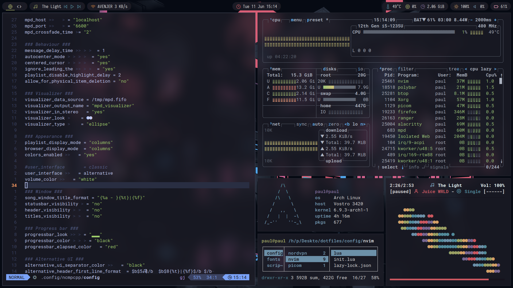
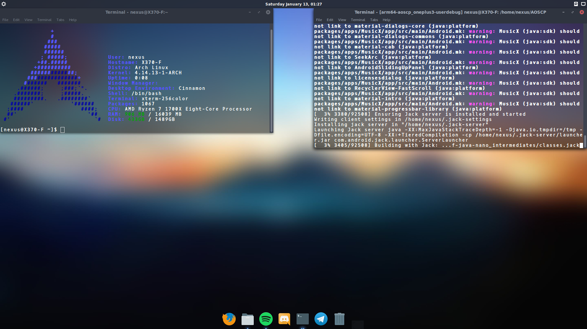
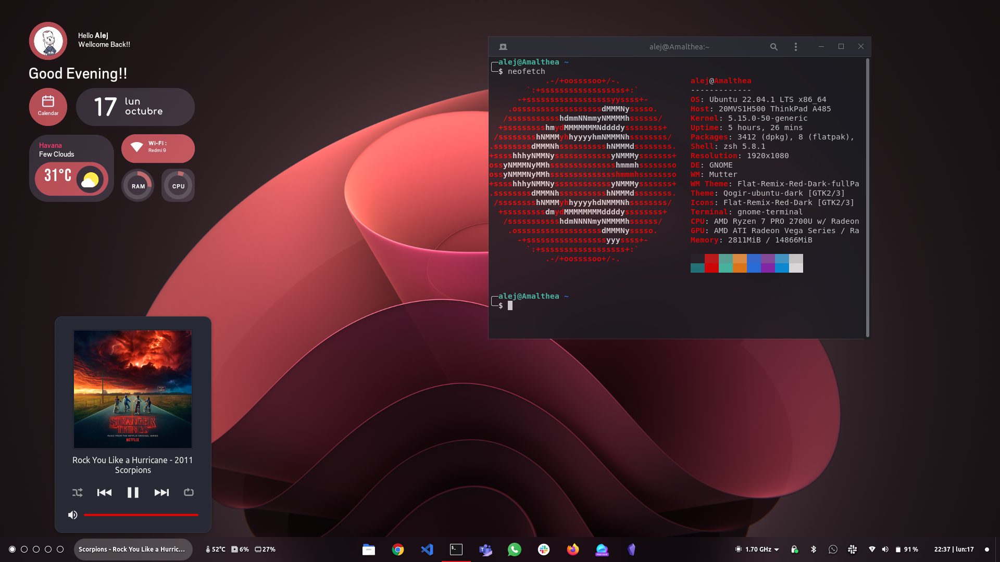
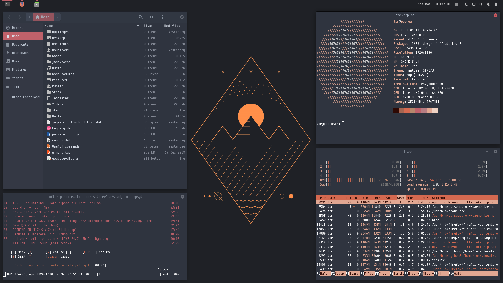
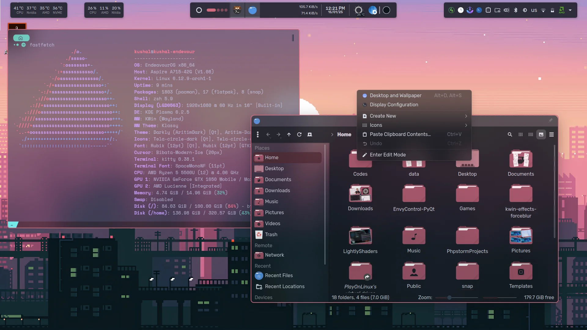
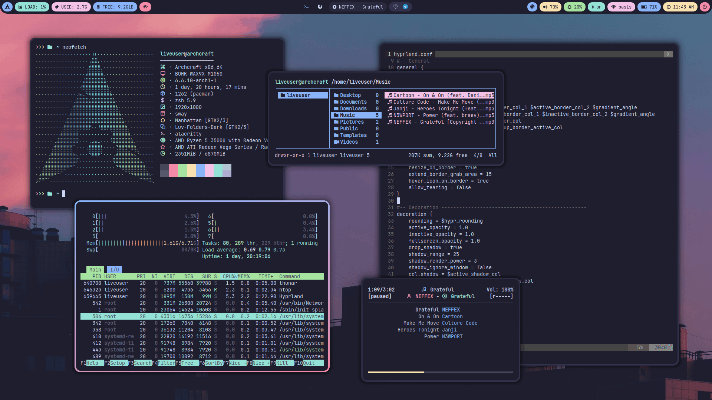

Go with Linux
Ми пропонуємо людям приєднуватись до
культу FOSS і даємо загальні поради
які допомагають людям перейти з Windows на Linux.
Переваги Linux :
- Безпека — менше вірусів і шкідливого ПЗ
- Продуктивність — працює швидше на старому залізі
- Прозорість — відкритий код, який можна перевірити
- Можливість оновлюватись коли завгодно
- Безкоштовність — жодних ліцензійних платежів
- Гнучкість — налаштовуй усе під себе
- Можливість всім говорити що у вас Linux
Що ви втрачаєте, переходячи на Linux :
- Деякі комерційні програми (наприклад, Adobe Photoshop)
- Деякі ігри, розроблені під Windows (як правило онлайн ігри з EasyAnticheat)
- Plug-and-play для деяких периферійних пристроїв типу принтера
Етапи переходу:
- Оцінити свої потреби і сумісність програм
- Вибрати дистрибутив (наприклад, Mint або Fedora)
- Створити резервну копію даних
- Встановити Linux на окремий розділ або знести вінду повністю
- Звикнути до нових інструментів і середовища





